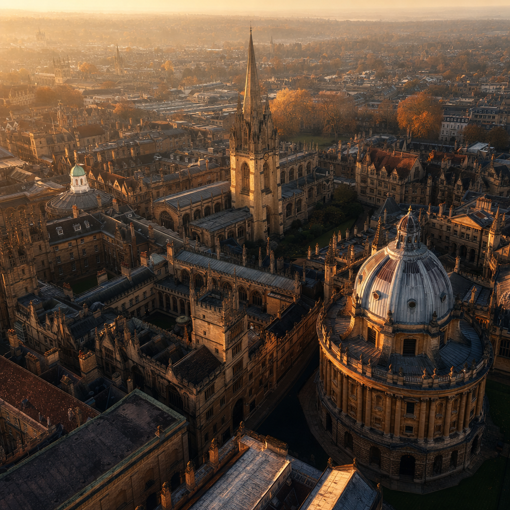
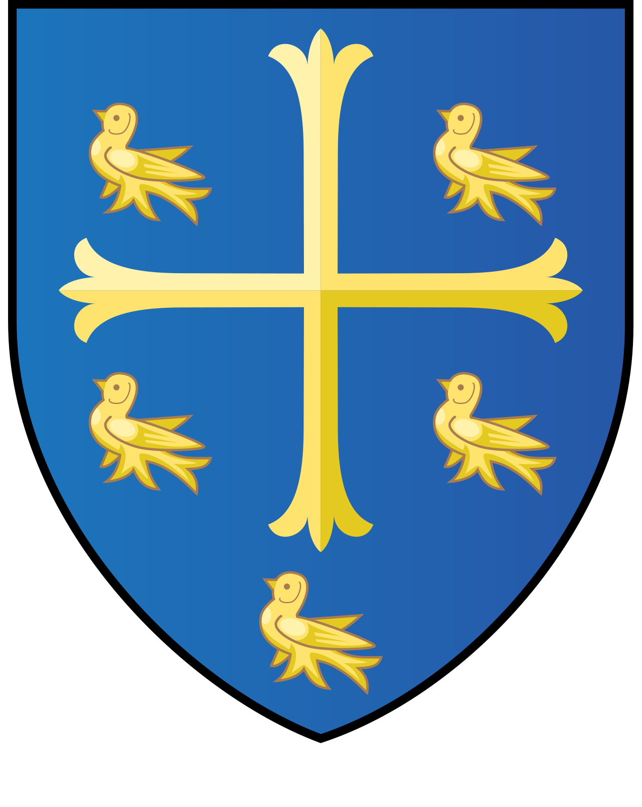
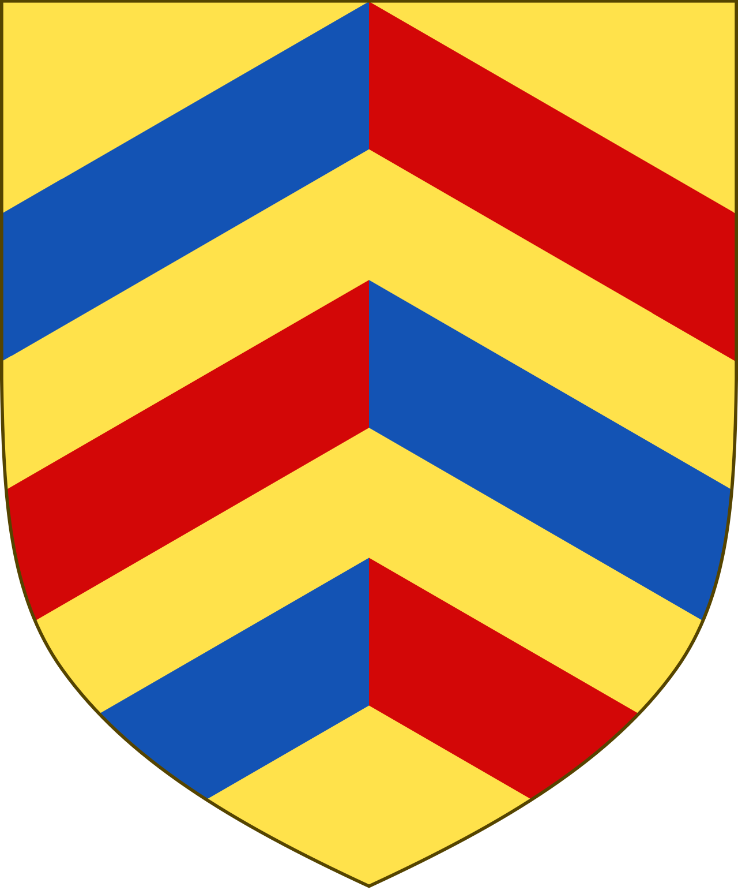
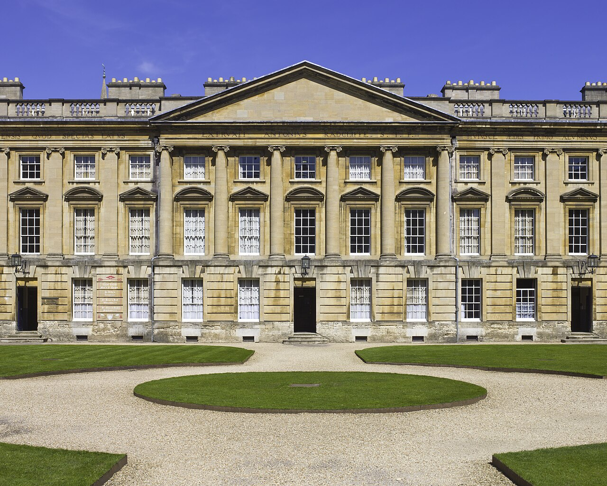
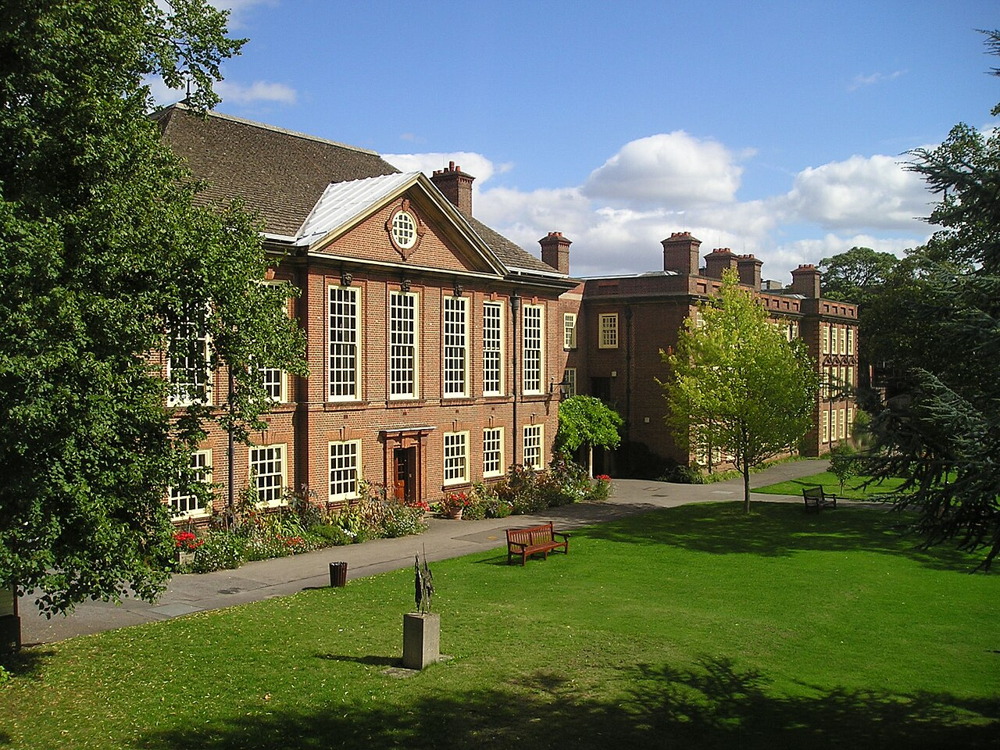

Oxford did not grow its colleges steadily over eight centuries. It built them in two short bursts — and the gaps and ghosts between them are the real story.
Ask which Oxford college is the oldest and you have walked into an 800-year-old argument with no winner. Three colleges claim the title, and the data shows why nobody can settle it: University College (1249), Balliol (1263) and Merton (1264) are separated by just fifteen years.
Each rests its claim on a different definition of "oldest." University College points to the earliest endowment, money left in William of Durham's 1249 will. Balliol claims the longest unbroken presence on a single site, its Broad Street home since around 1263. Merton holds the first formal statutes, the written constitution that made it self-governing in 1264.

?
?There is no right answer. All three sit inside a fifteen-year window, and each wins on a different rule: Univ on the earliest endowment (1249), Balliol on the longest continuous site (c.1263), Merton on the first formal statutes (1264). Members of each college still cheerfully reject the others' claims.
Footnote: the single oldest row in the data is Rewley Abbey (1201) — but it was a dissolved Cistercian monastery, not a college anyone would recognise today. The earliest number is not the earliest college.
There is even a tempting wrong answer. The single oldest row in the dataset is Rewley Abbey, dated 1201 — but it was a dissolved Cistercian monastery, not a college anyone would recognise today. The earliest number is not the earliest college.
Plot every founding by century and Oxford's history stops looking continuous. Instead of steady growth there are two peaks: a medieval wave in the 13th and 14th centuries, and a modern wave in the 19th and 20th — nine colleges in each of the last two, the joint-largest centuries on record.
Sharpen the lens to fifty-year windows and the modern wave becomes a spike. The half-century from 1850 to 1899 produced nine colleges, more than any other fifty years in eight hundred. The densest medieval window, 1250 to 1299, managed five. Oxford's busiest founding era is the most recent one.
Between the two waves sits a long, quiet middle — the part of the story most people never picture when they imagine an ancient university.
After the Tudor century, Oxford essentially stopped. The single largest gap in the entire founding record runs 156 years, from 1714 to 1870 — and the eighteenth century contributes exactly one college, Worcester. The other long gaps are real but smaller: seventy-five years, then fifty-one, then a pair of forty-eights deep in the medieval period.
The quiet middle of the barbell is not a gentle slowdown. It is a near-total halt — broken only when the Victorians arrived with new ideas about who a university was for.
The sixteenth century looks like a boom — eight colleges, the second-busiest century — but much of it is destruction wearing growth's clothes. Henry VIII's Reformation dissolved the monastic colleges: Gloucester fell in 1539, St Mary's in 1540.
Out of the rubble rose new foundations on the same stone. Cardinal Wolsey's Cardinal College was suppressed when Wolsey fell, refounded as King Henry VIII's College, and finally re-established by the king in 1546 as Christ Church. All three names survive as separate rows — one institution counted three times.

This is why the dataset mixes the living and the dead. Eleven of its fifty rows are defunct, dissolved, merged, or not residential colleges at all. Strip them out and you are left with the roughly thirty-nine colleges that exist today.
When the silence broke, it broke for women. The Victorian spike of 1850–1899 is largely the arrival of women's colleges: Lady Margaret Hall in 1878, Somerville the next year, then St Anne's, St Hugh's and St Hilda's by 1893.

One founder appears twice in this wave. Elizabeth Wordsworth founded both Lady Margaret Hall and St Hugh's — arguably the most productive single founder in the dataset, since the only other repeat founders, Wolsey and Henry VIII, were really renaming the same Reformation college.
The catch is that these institutions existed for decades before their students could graduate. Women attended lectures and sat exams but were not admitted to full Oxford degrees until 1920. The dataset records the building forty-two years before it records the right.
Read the namesake column top to bottom and you watch England secularise. Of the thirty-seven colleges with a recorded namesake, seventeen are religious — Mary Magdalene, John the Baptist, All Souls' Day, the Holy Trinity — and twenty are personal or secular.
The split tracks time. The medieval and Tudor colleges are named for saints and feast days; the modern ones are named for the person who paid — Nuffield, Wolfson, Kellogg, Reuben. The colleges' coats of arms encode the same lineage, each crest borrowing the heraldry of its founder or patron.
So the list of names is a compact social history of who held wealth in England across eight centuries: the medieval Church, then the Crown, then twentieth-century industry and finance.
The most recent row is Reuben College, founded in 2019 — the first new college at Oxford since Kellogg in 1990. Approved by the university as "Parks College," it was renamed after an £80 million gift and took its first graduate students in 2021, in the former Radcliffe Science Library.
The data that records all this is also full of holes, and the holes are honest. Forty-nine of fifty colleges record no motto at all; only Magdalen's "Floreat Magdalena!" survives. Twenty-two have no listed founder. These absences reflect what Wikidata happens to capture, not what the colleges actually have.
So treat the numbers as a careful sketch, not a register: medieval dates are nominal, defunct colleges sit beside living ones, and a blank field usually means a gap in the record rather than a gap in the world. The founding dates are real; the silences between them are the story.
Data. Founding history of the colleges of the University of Oxford, extracted from Wikidata via its public SPARQL endpoint (queried 2026-05-24). Colleges = items that are instance of "college of the University of Oxford" (Q2581649); founding years from inception (P571), founders from founded by (P112), namesakes from named after (P138). Wikidata content is CC0.
Background. Oldest-college dispute — Balliol College Archives and Wikipedia. Reformation refounding of Christ Church — Wikipedia. Women's colleges and the 1920 degrees — Wikipedia, Wikipedia. Reuben College — Wikipedia. Rewley Abbey — Wikipedia.
Imagery. The hero is an AI-generated atmospheric still (OpenAI gpt-5.4-image-2) animated to motion (Google Veo 3.1); the closing soundscape is AI-generated (Google Lyria 3). All college crests and photographs are real images from Wikimedia Commons, used under their licences:
Tools. Charts built with Vega-Lite 5 (inline data). Quiz, crest gallery and audio player are vanilla JavaScript.
{kind=link}
{kind=link}
{kind=link}